Agrikit: from component library to delivery platform
Where the library stands, what's next, how the MCP and AI toolkit fits in, two real consumers and how we hand off work.
- Latest
- v21.15.3
- Components
- 72
- Releases
- 325
- MCP tools
- 10
Presented by Agrikit Engineering
Six parts, demos in the middle
-
State of Agrikit 5 min
Numbers, what shipped, quality gates
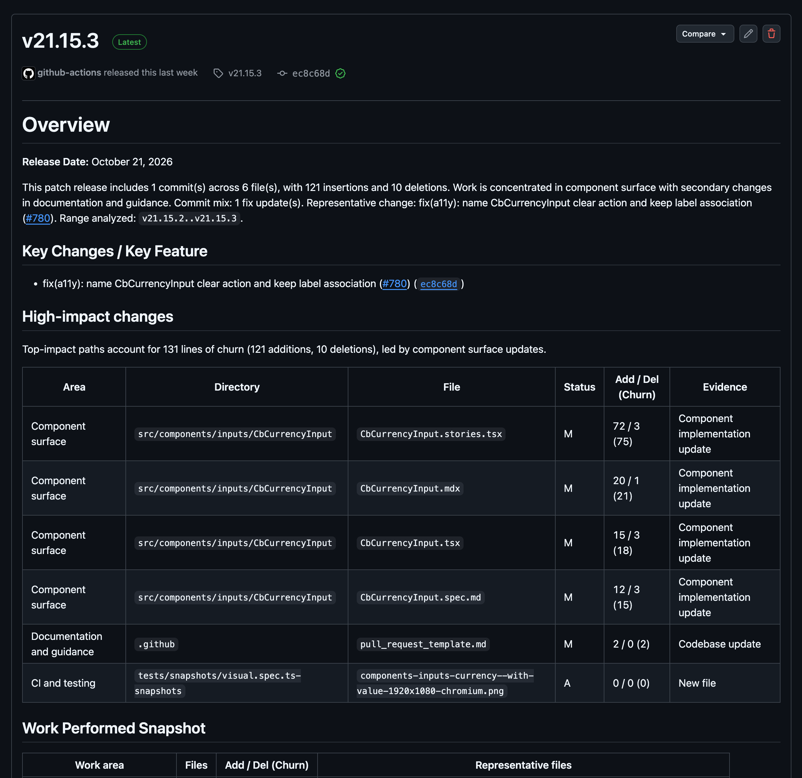
-
Upcoming 4 min
Dark mode v2, remote MCP
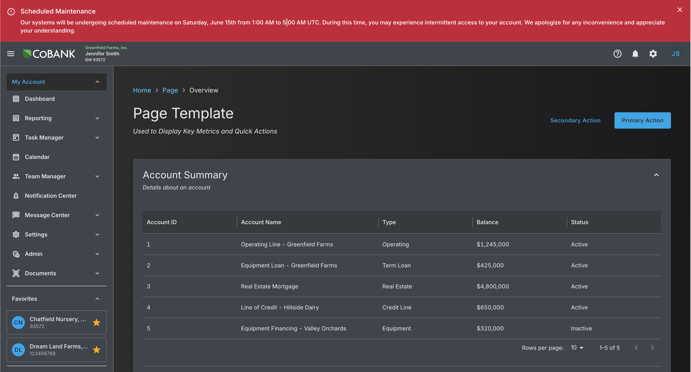
-
MCP & AI toolkit 6 min
Server, installer, agents, skills
tools/list · consumer workspace get_component list_components get_theme_tokens validate_accessibility scaffold_app_component
-
Live demos 8 min
cobank-app-starter, shd-design
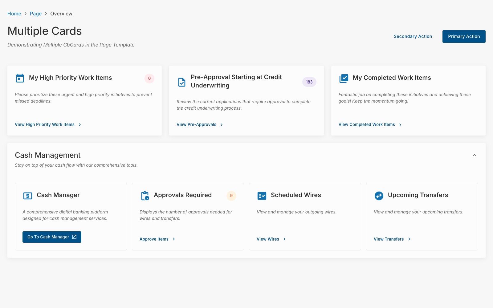
-
Developer handoff 4 min
Current, ideal, next steps
today Figma · prototype · component-first ideal context → Cb names → spec ⛔ review → story next 3 asks
-
Q&A 2 min
Resources and asks
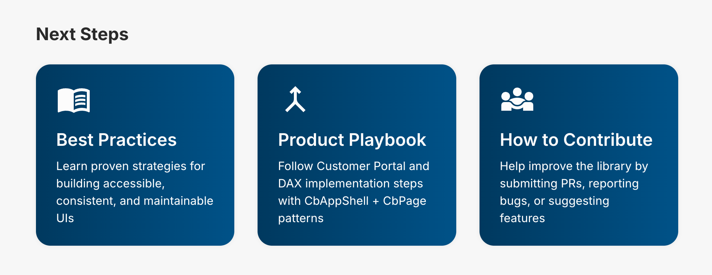
One React library, six entry points, one theme
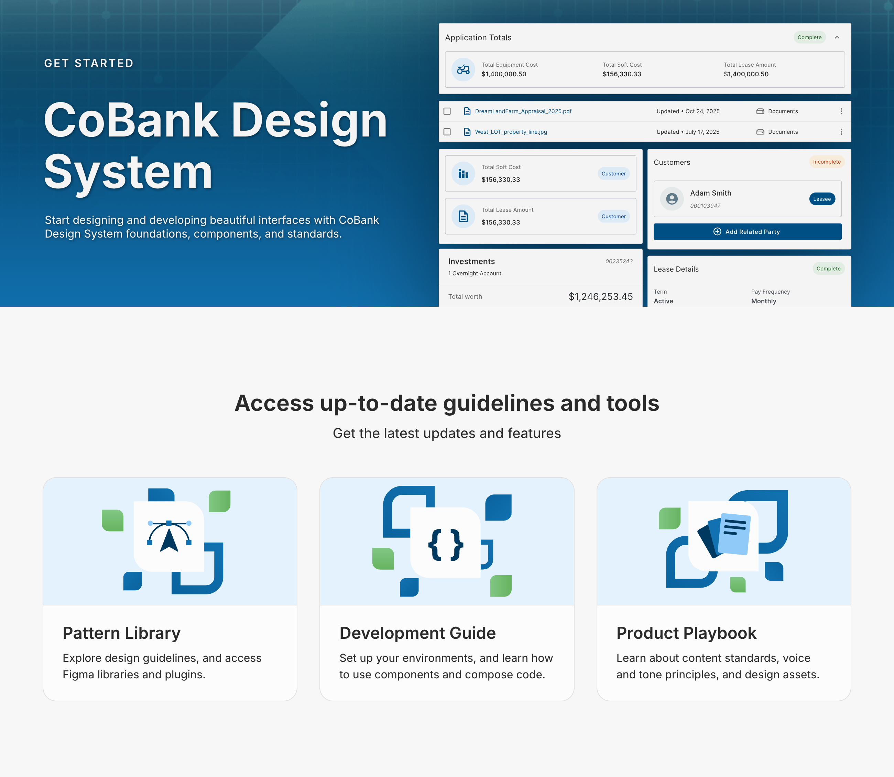
Entry points: optional peers stay out of your bundleimport { CbButton } from '@cobank-acb/shd-agrikit-ui-lib'; import { CbDataGridPremium } from '…/premium'; import { CbDateRangePickerPro } from '…/pro'; import { CbPrintToPDF } from '…/pdf'; import { CbNotes } from '…/notes'; import { CbOtpInput } from '…/mfa';
Patterns
Common workflows: approvals, notes, MFA, exports
Templates
CbAppShell, CbPage: product chrome and
page layout
Components
Buttons, inputs, grids, cards, feedback, entitlements
Foundations
createCoBankTheme(): color, type, spacing,
breakpoints as W3C tokens
Broader, better covered, shipping weekly
Components by category
- Inputs23
- Data display19
- Surfaces7
- Feedback7
- Entitlements5
- Navigation5
- Templates5
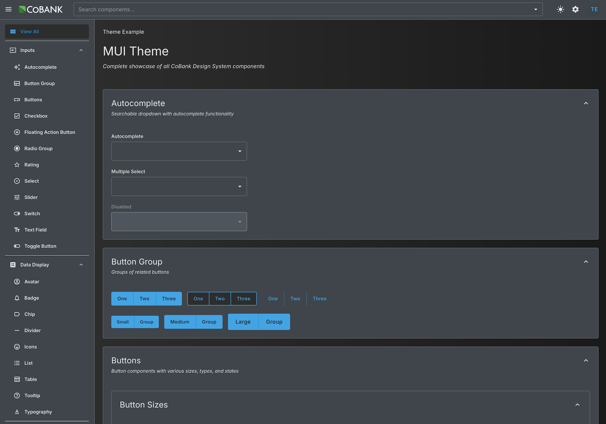
New components and the fixes app teams asked for
- CbActionCardClickable card
- CbTimelineGrouped activity, large data
-
CbDateRangePickerProNew
/proentry point -
MFA componentsMoved in as
/mfa - CbTabs vertical+ CbDatePicker keyboard
- CbTile · CbFileUploadNew inputs and surfaces
- CbAccountMenu · CbToast · CbAlertSign-out, timeout, banner CTA
- CbToolbar+ weekly a11y-fix automation
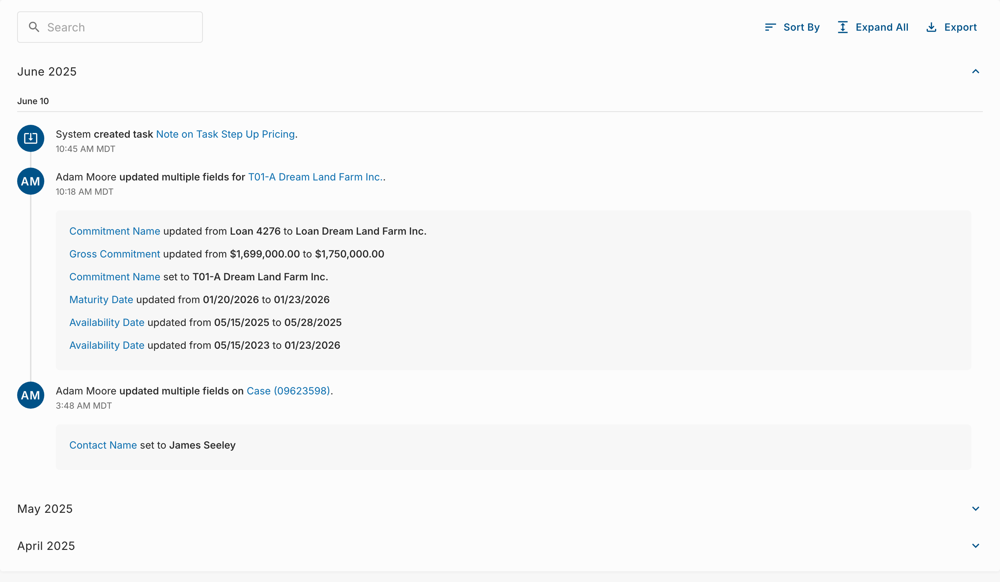
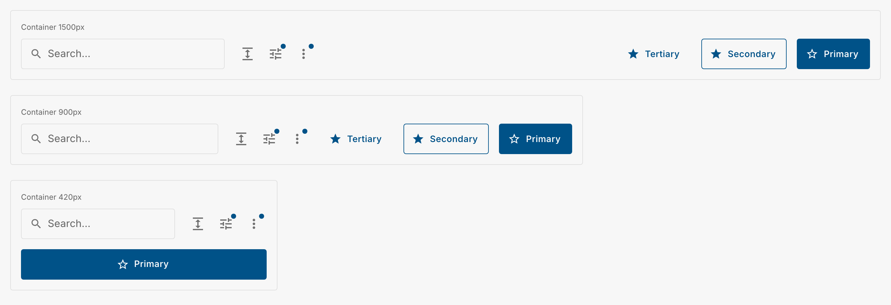
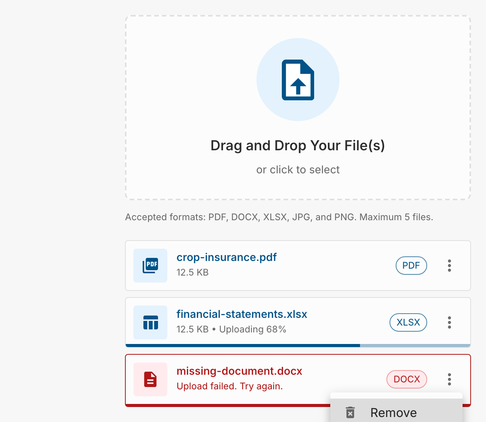
Quality is gated by tooling, not by memory
- Pre-commitLint, spec sync, staged drift detection
- Pre-pushSpec, story, MDX and test companions
- PR CIBuild, Playwright visual + axe
- ChromaticVisual diffs approved before merge
- Merge to mainsemantic-release → JFrog, MCP published alongside
Accessibility
APCA 60 Lc body, 45 Lc UI text; visible focus; reduced motion
Drift detection
Code, spec, story, docs and exports kept in step
Analytics
Stable data-analytics-id for Pendo
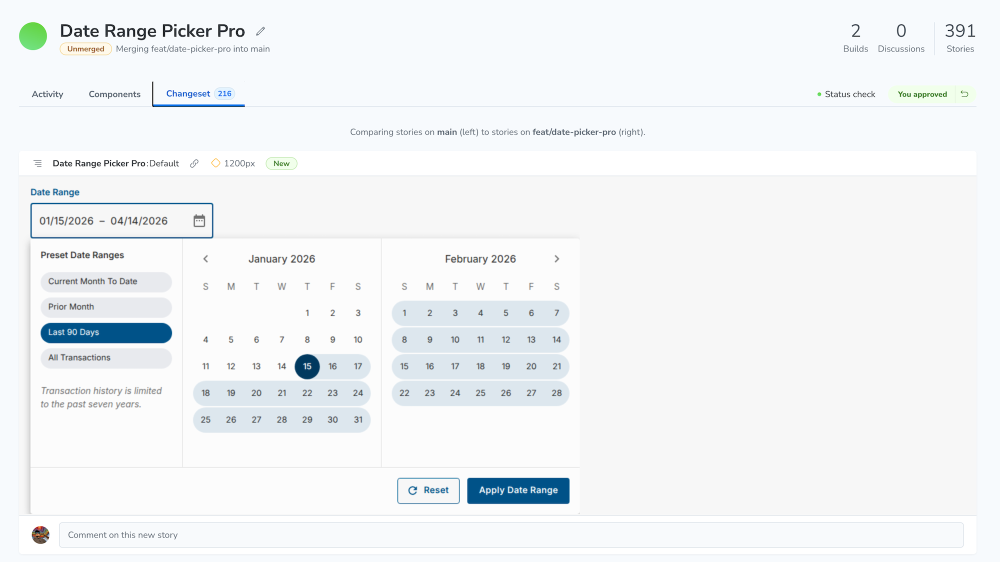
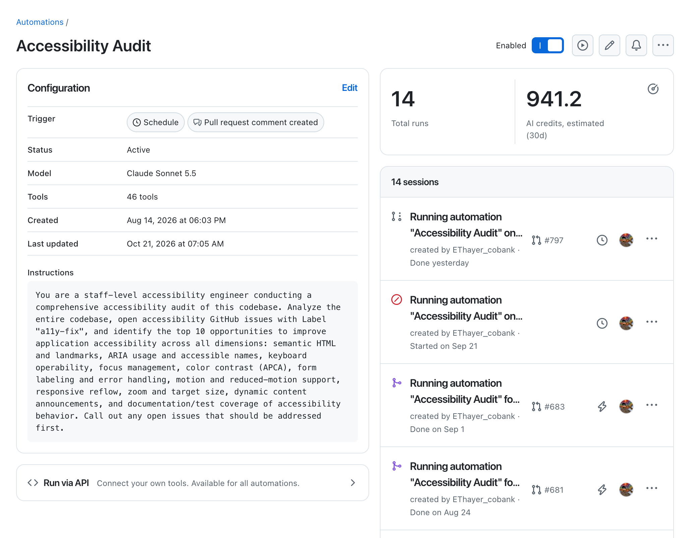
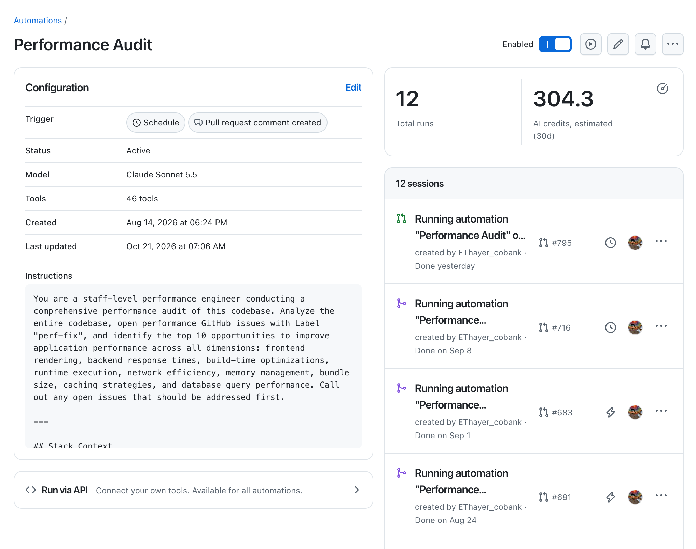
One theme, light / dark / system, no remount
Consumer APIconst theme = createCoBankColorSchemesTheme('system'); <ThemeProvider theme={theme}>…</ThemeProvider> // anywhere below const { mode, setMode } = useColorScheme();
Dark palette, contrast harness, persistence and system mode, high contrast, override parity, components on CSS vars, Storybook on the new theme
Dark visual regression, switch-performance evidence, light token groups, focus on every button, consumer docs, final gates
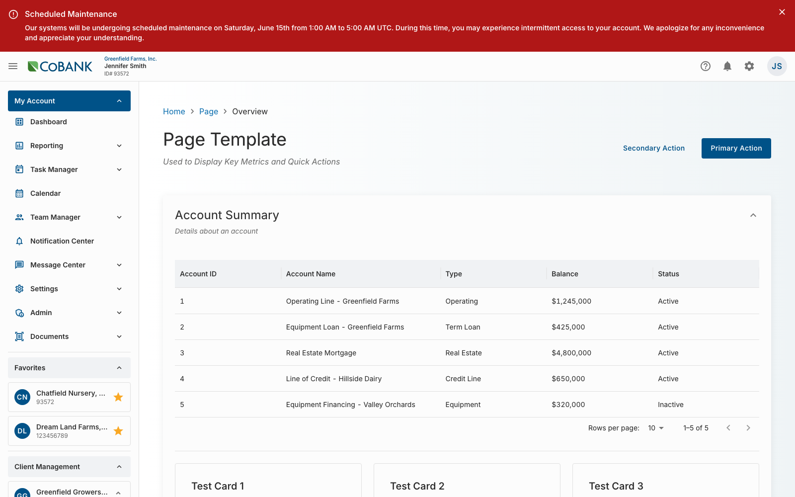
design.cobank.net/mcp: zero install
- Your AI clientVS Code, Cursor, Windsurf, Claude, custom agents
-
nginx · design.cobank.netStorybook;
/mcpproxied to the sidecar - MCP sidecarStreamable HTTP, same pod, same manifest as Storybook
Today · .vscode/mcp.json{ "agrikit": { "type": "stdio", "command": "npx", "args": ["-y", "@cobank-acb/agrikit-mcp"] } } needs Node + JFrog auth
Planned · illustrative{ "agrikit": { "type": "http", "url": "https://design.cobank.net/mcp" } } needs VPN only
- Read tools fully remote
-
Scaffolding stays local; falls back to the
scaffold_workflowprompt - Ships through the existing Storybook pipeline
Target not yet scheduled
Your assistant knows MUI. It doesn't know CoBank.
Without MCP · "Create a customer card"import { Card, Button, IconButton } from '@mui/material'; <Card sx={{ p: '16px', bgcolor: '#fff' }}> <img src="/farm.png" /> <IconButton onClick={…}><MoreVert /></IconButton> <Button variant="contained">View</Button> </Card>
Real output · validate_accessibility on the code aboveIssues found: 5 (2 errors, 3 info) ✕ Line 4 Images must have alt text img-alt · WCAG 1.1.1 ✕ Line 5 IconButton must have aria-label icon-button-label · WCAG 4.1.2 i Consider Cb-prefixed components
With Agrikit MCP · same prompt// get_component('CbActionCard') import { CbActionCard } from '@cobank-acb/shd-agrikit-ui-lib'; <CbActionCard title="Greenfield Growers, Inc." subtitle="123456789" onClick={openAccount} analyticsId="customer-card" />
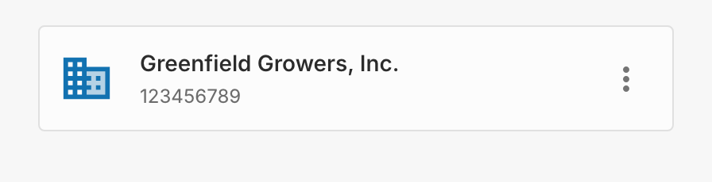
Three layers, one install
Facts: the MCP server
Live inventory, props, stories, tokens and a11y checks, read from the library itself.
Conventions: instructions + rules
Cb-first selection, MUI path imports, accessibility, ethical UX. Applied by file type.
Workflows: agents + skills
Consumer agent and PR reviewer, plus 31 skills: a11y audit, scaffold, spec-driven development.
Real result · what lands in a consumer repo (from the packed v21 tarball)loan-portal/ ├─ .vscode/mcp.json MCP server via npx ├─ .agrikit-context.json vite · TS · MUI 7 · Agrikit 21 ├─ .github/ │ ├─ agents/ agrikit-consumer · pr-reviewer │ └─ instructions/ agrikit · consumer-integration │ mui · development-standards │ web-interface-guidelines │ ethical-ux-guardrails · storybook └─ .agents/ ├─ rules/ 9 ├─ skills/ 31 + workflows/ └─ references/ a11y · perf · security · testing
Works across tools
VS Code + Copilot natively; adapters for Cursor, Windsurf, JetBrains and Cline.
Workspace-aware
App repos get scaffold_app_component; the library
gets contributor scaffold and drift tools.
10 tools, 3 prompts, workspace-aware
list_components get_component
get_theme_tokens
validate_accessibility
scaffold_app_component
scaffold_component + 4 drift tools
component_spec migration_guide
scaffold_workflow
Real output · list_components { category: "templates" }# CoBank Design System Components Templates · 5 · 5 stories · 5 docs · 5 spec.md | Component | Entry | Base MUI | |---------------|-------|---------------| | CbAppFooter | main | Link | | CbAppHeader | main | AppBar | | CbAppShell | main | useMediaQuery | | CbPage | main | Box | | CbPageHeader | main | Box |
Real output · get_component { componentName: "CbActionCard" }# CbActionCard — Component Contract Base Card (@mui/material/Card) Spec ✓ MDX ✓ Stories 6 | Prop | Type | |-------------|--------------------------| | title | string | | subtitle | string | | onClick | CbActionCardClickHandler | | onItemClick | @deprecated | | analyticsId | string |
Two commands, then reload VS Code
Real output · npx install-agrikit-ai$ npm install @cobank-acb/shd-agrikit-ui-lib $ npx install-agrikit-ai 🔍 Analyzing project... ├─ Framework: vite ├─ TypeScript: Yes ├─ MUI: Yes (^7.3.0) └─ Agrikit: ^21.15.3 ✅ Installed instructions ✅ Installed docs · rules · skills ✅ Installed references · agents ✅ Installed .agrikit-context.json ✅ Created .vscode/mcp.json 🎉 Installation Complete!
.vscode/mcp.json (generated){ "servers": { "agrikit": { "type": "stdio", "command": "npx", "args": ["-y", "@cobank-acb/agrikit-mcp"], "env": { AGRIKIT_LIB_ROOT, … } } } }
- Contributor-only files filtered out
- Asks which IDEs you use and writes adapters
- Re-run after upgrading Agrikit
- Needs JFrog auth in
~/.npmrc
The consumer agent works spec-first, with a human gate
-
Discover
list_components,get_component - DecideDirect use, wrapper or custom
-
SpecReads
PRODUCT_CONTEXT.md - ⛔ ReviewYou approve before any code
-
Implement
scaffold_app_component - Verifya11y, keyboard, dark mode
The consumer spec template · sdd-consumer-workflow.md# SPEC: LoanSummaryCard > Spec Review Status: not yet reviewed ## 0. Agrikit Component Discovery direct · wrapper · custom ## 1. Goal & Intent ## 2. Usage & Interface ## 3. Technical Implementation ## 4. Accessibility (WCAG 2.1 AA) ## 5. Implementation Checklist ## 6. Changelog
Cb-first, enforced
Raw MUI controls need a written reason.
No invented components
Only names list_components returned.
Reviewers included
A PR reviewer agent ships to consumers.
Tutorial: Build a Customer Portal screen with Agrikit
-
Start from the app template. In
/setup, choose Customer Portal or DAX to get the shared shell, routing and theme. -
Discover before you design. Use the
Agrikit MCP tools
list_componentsandget_componentto find supported building blocks and their props. - Describe the user outcome. For example: "Add a loans page with a CbPage, a CbCard summary and a CbDataGrid of loans."
- Review the spec before code. Confirm the component choices, scope and accessibility plan at the review gate.
-
Verify the result. Check keyboard use,
narrow layouts, light and dark themes, and imports from the
Cbcomponent set.
Make the request specific
Name the user task and the components the assistant discovered. Review its written plan before accepting an implementation.
Tutorial: Extend an approval workflow without rebuilding its UI
-
Read the repository guidance. Check
AGENTS.mdand.github/instructions/for local conventions, test commands and boundaries. -
Trace the existing flow. Follow the
approval-package task through its screens, then use
get_componentto inspect the Agrikit components already in use. -
Extend, don't duplicate. Reuse the
discovered components and layout patterns; for MUI-based
screens, keep established imports and use
Stackgapfor spacing. -
Validate the change. Run
validate_accessibility, test keyboard interaction and responsive states, then add a focused regression test. - Close real gaps upstream. If no component fits, document the missing pattern and file an Agrikit issue instead of creating a one-off copy.
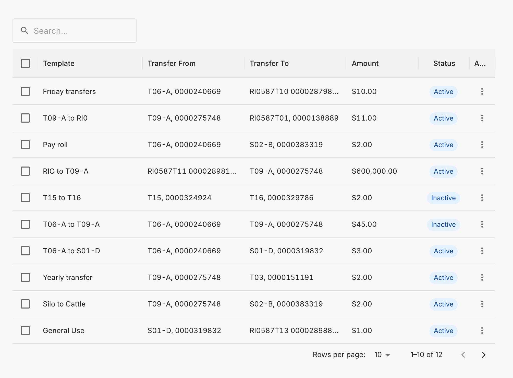
Keep the product's rules intact
Agrikit supplies consistent interface building blocks; the product team remains responsible for its approval and business logic.
Today it depends on which team you're on
Teams start from different places: some translate Figma handoffs, others prototype in app-starter. An approved spec gives both paths the same production target.
Figma-first
- Frames handed over, then interpreted
- Props guessed, not looked up
- Drift found in QA
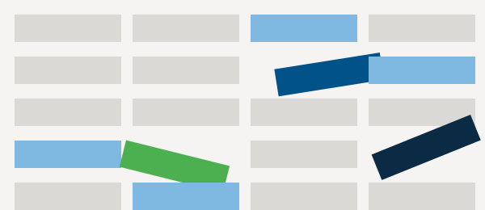
Prototype-first
- App-starter forks, already Agrikit
- No agreed path to production
- Specs optional
Component-first
- Requirements name
Cbcomponents - Props looked up via MCP
- Not yet the documented default
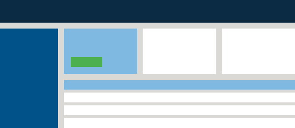
One documented path, with Agrikit names from the start
- Product contextProduct + UX keep it current
-
Name
CbpartsIn stories and designs - Discover & decideDirect, wrapper or custom
- ⛔ Spec reviewDev + design approve
- Build + storyFork or product repo
- Review & feed backGaps filed with Agrikit
Artifact 1 · the spec (real: CbToolbar.spec.md)# SPEC: CbToolbar ✓ Approved with amendment · 2026-10-07 ## 0. Component Discovery Checked list_components (70 entries). Reuse: CbButton · CbChip · CbSelect Raw-MUI exceptions, each with a reason. ## 1. Goal & Intent A responsive, accessible toolbar for CbDataGrid, usable standalone. ## 3–9. Behavior · Accessibility · Analytics …
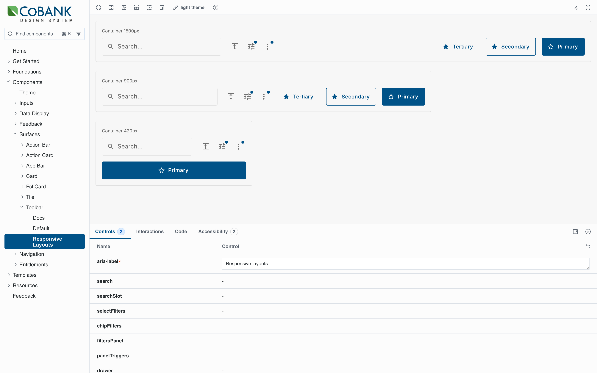
Three asks
We'll know it worked when new features merge with an approved spec.
Install the toolkit
Every repo that uses Agrikit runs
npx install-agrikit-ai and commits the output.
Each team · next sprint
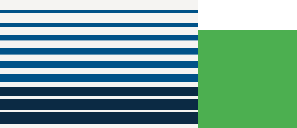
Pilot the path
Two volunteer teams run the ideal handoff for one sprint, then a retro.
Volunteer in chat today
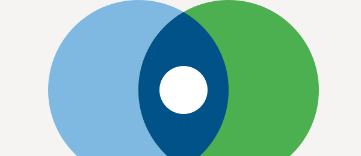
Close the loop
File gaps as Agrikit issues, not local one-offs. Ask questions in the Teams channel.
UI/UX Component Library channel